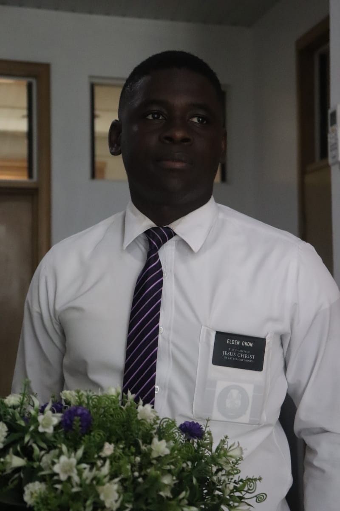

Nsikak Okon | WDD130
Hello! My name is Nsikak Okon, and I am from Cross River, Nigeria. I enjoy solving problems on the internet. a dedicated professional in software. With a proven track record in fontend development, I bring expertise in solving problems in the world of softwares.Open to new opportunities and collaborations. Reach out to discuss how my skills align with your needs. A vibrant and culturally diverse nation, Nigeria stands as Africa's most populous country and a key player in the continent's economy. With a rich history and a resilient population, Nigeria's dynamic business landscape has honed my adaptability and intercultural communication skills. As a resident, I've embraced the collaborative spirit and entrepreneurial ethos that define Nigeria, contributing to my ability to thrive in diverse environments.